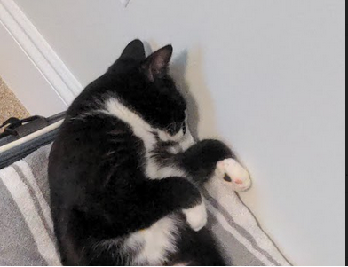

Introduction
A picture of my cat, Calculus
- Personal background: Born in Long Island, NY and grew up in Charlotte, NC. 1 dog, 1 cat, and 6 chickens.
- Professional Background: I have worked in a variety of positions including food service, education, and legal.
- Academic Background: Attended high school at Central Academy of Technology and Arts as part of their Cyber Security program. I am currently in my sophomore year at UNCC for Computer Science.
- Programming/Software Background: I have taken 3 courses in Java at UNCC as well as a handful of Python courses at a summer camp called iDTech.
- Primary Computer Platform: Windows 10
- Current Courses Enrolled In:
- MATH 2164: Matrices and Linear Algebra
- LBST 2301: Critical Thinking and Communication
- ITIS 3135: Web App Design and Development
- ITSC 3155: Software Engineering
- ITIS 3200: Intro to Info Security and Privacy
- Story/item: My cat is named Calculus because I had an agreement with my dad that if I got a B or higher in Calculus 2 he would get me a cat. I call her Cali for short.